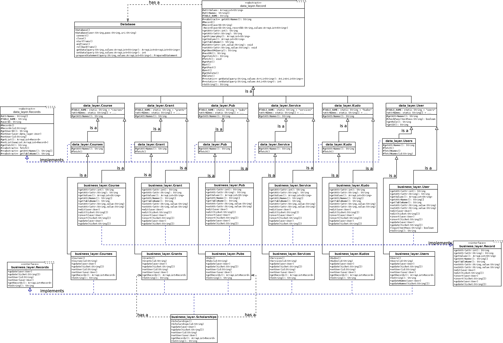

| Package | Description |
|---|---|
| business_layer | |
| data_layer | |
| presentation_layer |
This is a database application that will allow users to keep track of and update information pertaining to the annual evaluation of faculty. Functionality of the system is based on the type of actor using the application. Actors of the system are divided into 3 groups:
Data is stored for each faculty user composing a profile. This profile contains publications, grant/scholarships, and services for the particular faculty member. The faculty member will be able to view their own profile by logging in with a userid and password. If changes need to be made, requests are sent to the admin assistant who will update the corresponding profile. New members will have to request to be added by the chair. The chair will also have to ability to update the evaluation for each faculty member.
A graphical user interface is available to each user and the appropriate action will be displayed based on the user’s permissions.
All records are stored on one database.
Grants and pubs are grouped together in the user interface under the label “scholarship”. Courses are called “teaching” in the UI.
Faculty can view all subtables about themselves except kudos, and cannot edit or insert records.
Assistants can view/edit/insert all subtables except kudos.
The Chair can view/edit/insert all tables.
The entire application wasen in Java, because it is the language that the programming team is most familiar with, and this application did not require any functionality that cannot be reasonably built in Java.
The Database class is the only class that interacts with the database directly. It handles connections, prepared statements and transactions, but does not have any specific query strings.
The "singular" data layer classes (Course, Pub, Grant, etc.) interact with the database by sending queries to the Database class's getData and setData methods. They also store the values of a single record's attributes, and structural information (such as the table name and attribute names). The majority of the code is in the Record abstract class, which the other singular data layer classes are subclasses of. Query strings are generated by methods in Record, based on table information stored in Record's subclasses.
The "plural" data layer classes (Courses, Pubs, Grants, etc.) manage lists of the "singular" data layer objects. They are all subclasses of the abstract class Records.
The business layer's structure mostly mirrors that of the data layer. The main difference is that the business layer's classes that refer to specific tables are subclasses of their data layer versions, but implement interfaces called Record and Records. User permissions are handled at this layer by requiring a User object or a token to be passed in to any methods that interact with the database (update, edit and insert).
View diagram larger.
LoginGUI launches a login window. The LoginListener checks the username and password against the database, and launches the main GUI if credentials are correct.
MainGUI is the program's main window. It includes help menus, controls for viewing lists of records in a table format, and buttons that launch more detailed views of single records.
FacultyTableModel is a subclass of DefaultTableModel. It controls the rendering of the records in the table. The main difference from DefaultTableModel is that table cells are not editable.
DetailPage displays a single record in a format that makes it easier for the user to read long strings. Depending on which of its constructors are called, it can be used to view a record, edit a record, or add a new record.
This application will not entirely fix the core problem (people forgetting to record items needed for faculty evaluation). Though having the database will help keep the information organized and prevent reviewers from losing it, staff still might forget to enter the information in the first place. In addition, recordkeeping might temporarily become worse when this application is in use but not fully adopted, because users might assume that all records are in the system when they are not.
Because this is a desktop application (as opposed to a web application), it may be difficult or impossible for users to access the database while away from work. Users would have to install the application on all computers they wish to use it from. In the future, the department should consider making a mobile app version of this application’s presentation layer so that users can access the database away from work.
Before beginning this project, the programming team was relatively unfamiliar with table GUIs. To prevent this from being a problem, we began researching our options for table displays early.
{kind=link}